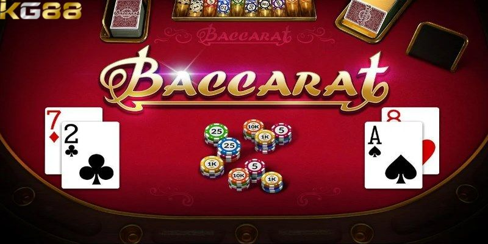
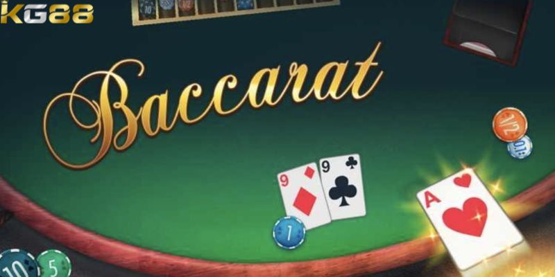

CASINO KG88
Tìm Hiểu Luật Baccarat Và Kinh Nghiệm Chơi Hiệu Quả
POSTED ON THÁNG NĂM 25, 2024 BY ADMINKG88

Baccarat là trò chơi có nguồn gốc từ châu Âu và lịch sử phát triển lâu đời. Tựa game đã nhanh chóng thu hút được sự quan tâm của đông đảo anh em bet thủ yêu thích trò bài. Cùng KG88 tìm hiểu chi tiết tựa game thông qua bài viết ngay sau đây.
Baccarat là gì?
Baccarat là một trò chơi đối kháng tương tự giống với bài 3 lá ở Việt Nam: bên nào có số điểm cao hơn sẽ thắng. Tuy nhiên quyền chọn bài để đặt cược phụ thuộc vào người chơi thay vì cố định trên một bộ bài được chia nhất định như những trò chơi khác.
Điều này đã tối ưu hoá được sự công bằng và được nhiều người chơi đánh giá cao. Luật chơi game bài này khá phức tạp nhưng thuật ngữ tương đối ít vì luật chơi nhận ít tương tác, người chơi chỉ việc đặt cược vào cửa mình mong muốn còn lại nhà cái sẽ lo.
Hướng dẫn chi tiết cách chơi baccarat cần nắm
Baccarat là một tựa game cực kỳ hot trong cộng đồng casino. Tuy nhiên gần đây thì trò chơi này còn tạo nên nhiều tiếng vang lớn trong cộng đồng người chơi. Hãy cùng chúng tôi tìm hiểu bài viết sau để có thể hiểu thêm về game bài này nhé!
Luật chơi cơ bản bạn nên biết
Trò chơi được đánh giá là có một luật chơi khá đơn giản và thú vị. Người chơi sẽ không mất quá nhiều thời gian để tìm hiểu và học luật quá kỹ. Tuy nhiên để có thể tìm kiếm thêm nhiều cơ hội săn thưởng cho bản thân thì bạn nên tìm hiểu kỹ hơn về luật chơi.
- Thông thường ở mỗi ván bàn sẽ được thành lập nếu có ít nhất là 2 và cao nhất là 10 người tham gia. Khi bắt đầu ván bài thì người chơi sẽ bắt đầu tiến hành xuống tiền vào cửa cược mà mình mong muốn. Tiếp đến là Dealer sẽ chia cố định 4 quân bài cho 2 cửa là Banker và Player.
- Ở một vài trường hợp thì có thể chia thêm lá thứ 3. Sau đó Dealer sẽ bắt đầu mở bài, nếu như bạn có tổng số điểm hợp lệ và lớn nhất thì được tính là chiến thắng. Đồng thời ván bài sẽ được tính là kết thúc khi cược thủ không bổ sung thêm bài.
- Cách tính điểm sẽ khá giống với bài cào. Cao nhất sẽ là 9 điểm và nhỏ nhất là 0 điểm. Nếu như bạn là một dân chơi khét tiếng trong làng bài cào thì chắc chắn rằng bạn sẽ nhanh chóng chinh phục được sảnh cá cược này.
Luật chơi cơ bản baccarat bạn nên nắm bắt rõ
Các cửa cược cơ bản
Người chơi nên nắm vững những thuật ngữ của cửa cược này để tránh đặt tiền nhầm chỗ dẫn đến việc thua lỗ không đáng có.
- Cửa cược Banker: Đây là một cửa cược được quy định thắng nếu người chơi có điểm số cao hoặc gần bằng 9.
- Cửa Player: Đây là một cửa cược có quy định thắng khi điểm số có giá trị cao hơn của Banker hoặc gần bằng 9.
- Cửa cuối là Tie còn được gọi với cái tên là hoà. Nghĩa là các giá trị của điểm số giữa hai cửa Banker và Player ngang bằng nhau.
Kinh nghiệm chơi baccarat cho tân thủ hiệu quả
Đây là một trò chơi hấp dẫn và ẩn chứa nhiều điều may rủi, người chơi khó có thể đoán trước được kết quả. Tuy nhiên, nếu như bạn nắm vững được những kinh nghiệm chơi baccarat sau đây thì đảm bảo tỷ lệ thắng cược của bạn tại Casino KG88 sẽ rất cao.
Hiểu luật chơi cơ bản
Cũng như những trò chơi đánh bài khác để có thể tăng khả năng chiến thắng thì người chơi cần phải nắm rõ được luật chơi. Hiểu được luật chơi của baccarat không chỉ sẽ giúp cho bạn tránh được bị phạt mà còn giúp bạn đưa ra được những chiến lược phù hợp. Đây là lời khuyên cho anh em đặc biệt là anh em mới tham gia. Hãy dành chút thời gian để tìm hiểu kỹ luật chơi trước khi tham gia đặt cược.

Hiểu được luật chơi sẽ giúp anh em đưa ra được những chiến lược
phù hợp
Chia nhỏ vốn đặt cược
Đây là một kinh nghiệm xương máu được đúc kết từ những bậc thầy lâu năm trong nghề. Việc chia nhỏ số vốn sẽ giúp bạn quản lý được nguồn tài chính hiện có. Ngược lại, xác suất bạn giành được chiến thắng sẽ cao hơn và gỡ được lại một phần vốn.
Nên lựa chọn cửa cược Banker
Trong các cửa cược thì của Banker là cửa gặp phải ít rủi ro nhất. Điều này đã được đúc kết từ những anh em có kinh nghiệm chơi baccarat lâu năm. Cửa này sẽ ăn 1.06% tức là bạn sẽ mất ít tiền hơn. Tuy nhiên, bạn có thể cân nhắc chọn cửa Player. Vì cửa này cũng có tỷ lệ thắng sau cửa Banker.
Không đặt quá nhiều vào cửa cược tie
Cửa Tie là một trong 3 cửa cược có tỷ lệ ăn tiền cực kỳ hấp dẫn. Vậy nên, nhiều anh em đã chọn cửa này để có thể thu hồi vốn nhanh. Nếu bạn chọn cửa này khi thắng bạn sẽ được 1 ăn 8. Tuy có mức trả thưởng hấp dẫn những tỷ lệ thắng ở cửa này quá thấp. Do đó, người chơi không nên đặt cược vào cửa Tie này quá nhiều nếu như không muốn mất vốn.

Không đặt quá nhiều vào cửa cược tie
Bài viết trên KG88 đã hướng dẫn đầy đủ chi tiết về baccarat cùng với kinh nghiệm chơi dễ thắng nhất. Hy vọng rằng những thông tin trên sẽ giúp ích cho người chơi để có một trải nghiệm game tốt nhất.
BÀI VIẾT MỚI